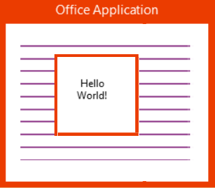
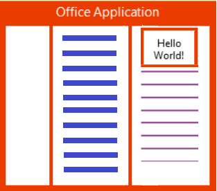

您所在的位置：什么是 Office Apps》Office Apps 类型及平台支持
Office Apps 类型及平台支持
Office Apps 类型
Office Apps平台支持三种应用（应用也称为AddIn,也就是外接程序）类型：Office 任务面板(任务窗格外接程序)、Office 内容应用（内容外接程序）以及Office 邮件应用（邮件外接程序）。
1. 任务面板应用
任务面板应用显示在 Office 文档的一侧， 可用来增强文档的查看或创作体验，例如实现 Word 文档内的 Wikipedia词典(点击查看)、 代码格式化助手 Code Format （点击查看）等应用。

2. 内容应用
放置在 Office 文档中的任意位置,此类应用可以丰富文档或基于浏览器的 Access 数据库的内容。 例如之前我们看到的用来实现数据可视化的 People Graph (点击查看)。

3. 邮件应用
显示在邮件正文的上方，可用来实现与邮件相关的应用。
例如，FedEx 包裹追踪
（点击查看）
可根据邮件中存在的快递号，查询包裹详情，用户不需要切换到浏览器登录 FedEx 官网进行查询。
邮件应用适用的用户场景:
- 最终用户需要在查看或撰写电子邮件和约会时，使用 Office Apps
- 需要根据邮件上下文决定是否应该显示邮件应用入口。 例如，当发现邮件正文中有地址信息时，才显示地图邮件应用入口，用户点击入口后，邮件应用启动，并将匹配到的地址信息显示在地图上。
- 应用程序不仅在台式机上可用，而且在平板电脑或智能手机上也可用

目前三种 Apps类型在 Office 平台上的支持
下表总结了不同 Office 软件对三种App类型的支持情况，当然，将来会有越来越多的 Office 软件能够支持App。
| Office 软件类型 | Office 软件 | 是否支持任务窗格应用程序 | 是否支持内容应用程序 | 是否支持邮件应用程序 |
|---|---|---|---|---|
| Office PC 富客户端版本 | Word 2013 或更高版本 | 是 | 否 | 否 |
| Excel 2013 或更高版本 | 是 | 是 | 否 | |
| PowerPoint 2013 或更高版本 | 是 | 是 | 否 | |
| Project 2013 或更高版本 | 是 | 否 | 否 | |
| Outlook 2013 或更高版本 | 否 | 否 | 是 | |
| Office Web 版应用程序 | Word Online | 是 | 否 | 否 |
| Excel Online | 是 | 是 | 否 | |
| PowerPoint Online | 是 | 是 | 否 | |
| Access Web 应用程序 | 否 | 是 | 否 | |
| Outlook Web 应用程序 | 否 | 否 | 是 | |
| Office RT 版应用程序 | Word RT | 是 | 否 | 否 |
| Excel RT | 是 | 是 | 否 | |
| PowerPoint RT | 是 | 是 | 否 | |
| Outlook RT | 否 | 否 | 是 | |
| Office Mac 版应用程序 | Outlook for Mac | 否 | 否 | 是 |
| OWA for Devices
OWA与Outlook Web 版应用的区别，
|
适用于设备的 OWA | 否 | 否 | 是 |
相关链接
| OWA for Devices |
| Outlook Web Access简称OWA是基于微软Hosted Exchange技术的托管邮局的一项Web访问功能 |
| OWA for iPhone and OWA for iPad |
| 开发 Office 相关应用程序 |
原文地址：http://simpeng.net/oai/oai-chapter-1/office-addin-types-and-current-platoform-supporting.html，转载请注明出处。